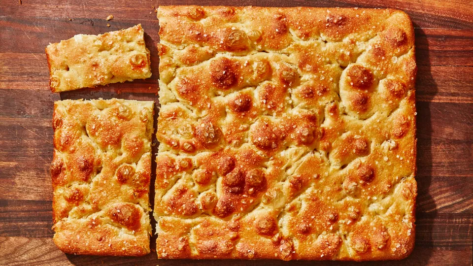

Focaccia

Description
Focaccia is a staple Italian bread consumed in many different meals thanks to its simple yet bursting flavour.
This recipe specifically produces a pillow-y soft and airy focaccia encrusted with a crunchy top and bottom thanks to the use of high quality olive oil.
Servings: one 18x13" pan
What you'll need
- Stand mixer with a dough hook attachment
- Cloth bowl covers
- Bowl scraper
- Small offset spatula
Ingredients
- 6 1/4 cups bread flower
- 2 1/4 tsp. active dry yeast
- A pinch of sugar
- 2 tbsp. Diamond Crystal salt
- 5 tbsp. extra-virgin olive oil
- Flaky sea salt
Steps
-
Combine flour and 2 1/2 cups room-temperature water in the bowl of a stand mixer with the
dough hook. Mix on low speed, scraping down the sides and hook to incorporate any dry flour,
until a shaggy dough forms.
-
Remove the dough hook and cover the bowl with a cloth cover. Let sit while preparing the yeast
in the next step.
-
Stir yeast, sugar and 1/2 cup warm water with a fork in a small bowl to dissolve. Let sit until yeast
is foamy (~5 minutes).
-
Pour yeast mixture into the stand mixer bolw and mix on low speed until the dough absorbes all additional water (~1 minute).
Add salt and continue to mix, increasing speed to medium, until the dough is elastic and very sticky (~5 minutes).
-
Pour 3 tbsp. olive oil into a large bowl and swirl to coat sides. Scrape in the dough, and cover and place in a warm spot until the doubh
has doubled in volume (~2-3 hours).
-
Drizzle tbsp. olive oil over a 18x13" sheet pan and use your fingers to rub all over the bottom and sides.
Fold the dough inside the bowl with a spatula a couple of times for it to deflate, then scrape onto the prepared baking sheet.
Using oiled hands, lift up the dough and fold it over onto itself in half, rotate the baking sheet 90 degrees and fold it in half again.
Cover the dough with some well-oiled plasic wrap and let rest for 10 minutes.
-
Uncover the dough and gently stretch it, with oiled hands, across the length and width of the baking sheet in an even layer.
If the dough starts to spring back, let it sit for 5-10 minutes and start again.
Cover the baking sheet with well-oiled plastic wrap and chill for at least 8 hours (up to 24 hours).
-
Let the sheet pan sit in a warm spot until the dough is puffed up and has nearly doubled in height (~45-65 minutes).
Meanwhile, place a rack in the center of the over and preheat to 450 degrees Farenheit.
-
Remove the plastic and drizzle the dough generously with more oil. Oil your hands again and press your fingertips firmly in the dough ,
pushing down all the way to the bottom of the pan to dimple it all over.
Sprinkle generously with flaky salt.
-
Bake the focaccia until the surface is a deep golden brown all over (~25-35 minutes).
-
Let the pan cool for 10 minutes. Slide a thin metal spatula underneath the focaccia to loosen it from the pan and transfer to a wire rack.
Let cool completely before digging in!